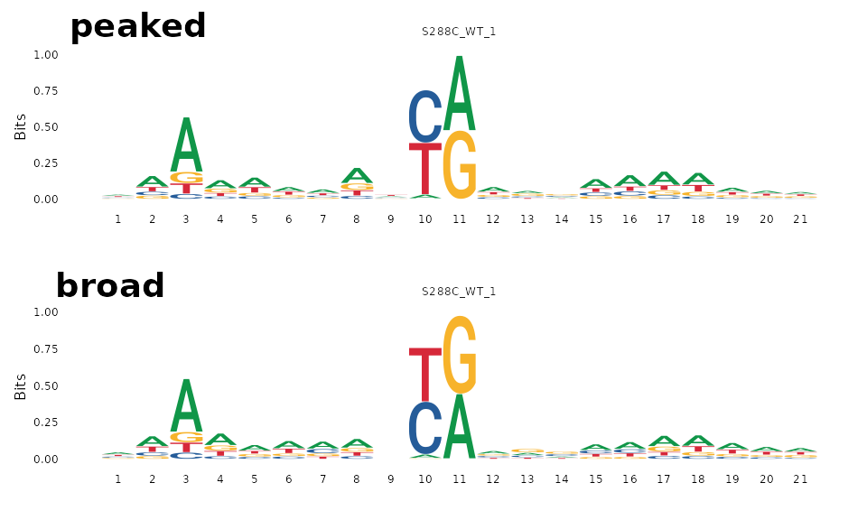
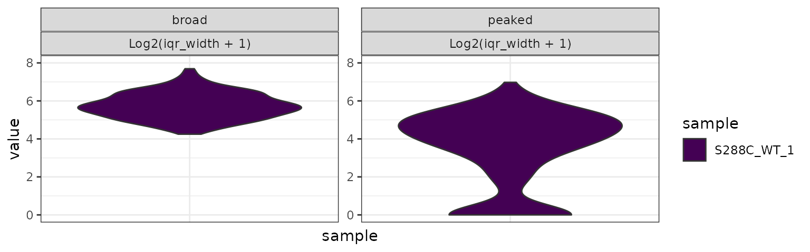
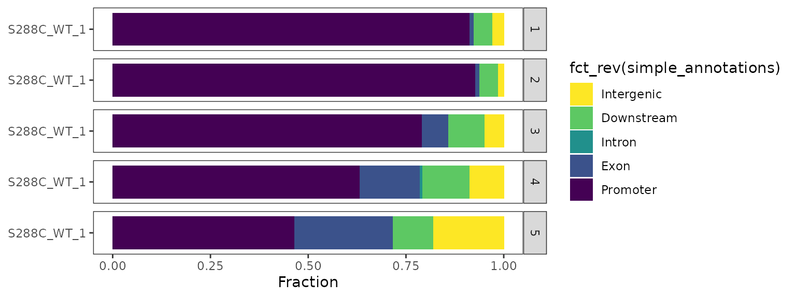
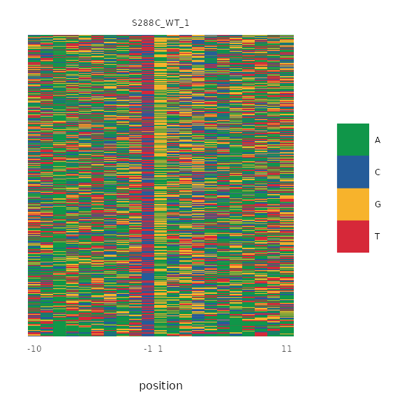
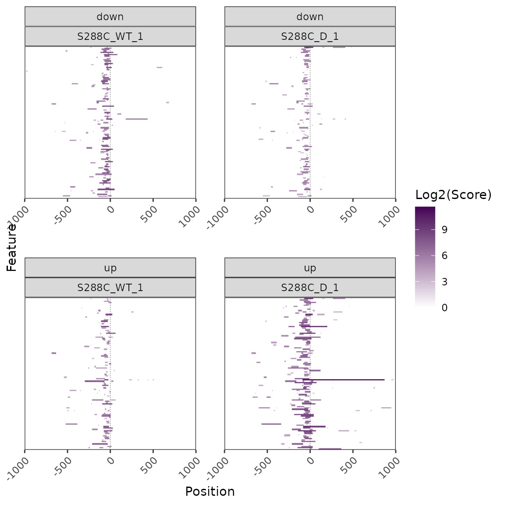

DATA_CONDITIONING.RmdWhen analyzing TSS mapping data, it is often desirable to assess specific subsets of TSSs or TSRs. TSRexploreR offers a flexible approach to data conditioning, allowing grouping by categorical variables and filtering, quantiling, and ordering by numerical variables. Conditionals can be applied to most functions via the data_conditions argument. For heatmaps, the distinct data structure necessitates a separate group of arguments to mimic these data conditioning features. Below, we provide several examples of data conditioning with TSRexploreR, using the provided S. cerevisiae STRIPE-seq data.
library("TSRexploreR")
# Load example TSSs
data(TSSs)
# Load genome assembly and annotation
assembly <- system.file("extdata", "S288C_Assembly.fasta", package="TSRexploreR")
annotation <- system.file("extdata", "S288C_Annotation.gtf", package="TSRexploreR")
# Generate sample sheet
sample_sheet <- data.frame(
sample_name=c(sprintf("S288C_D_%s", seq_len(3)),
sprintf("S288C_WT_%s", seq_len(3))),
file_1=NA, file_2=NA,
condition=c(rep("Diamide", 3), rep("Untreated", 3))
)
# Create the TSRexploreR object
exp <- tsr_explorer(
TSSs,
sample_sheet=sample_sheet,
genome_annotation=annotation,
genome_assembly=assembly
)
# Format counts
exp <- format_counts(exp, data_type="tss")
# Annotate TSSs
exp <- annotate_features(exp, data_type="tss", upstream=250, downstream=100,
feature_type="transcript")
exp <- normalize_counts(exp, data_type="tss", method="deseq2")
# Cluster TSSs
exp <- tss_clustering(exp, threshold=3, max_distance=25, n_samples=1)
# Associate TSSs with TSRs
exp <- associate_with_tsr(exp)
# Annotate TSRs
exp <- annotate_features(exp, data_type="tsr", upstream=250, downstream=100,
feature_type="transcript")
# Mark dominant TSS per TSR
exp <- mark_dominant(exp, data_type="tss")
# Calculate TSR metrics
exp <- tsr_metrics(exp)In this example, we group TSRs by shape class and plot sequence logos centered on the dominant TSS of each TSR.
plot_sequence_logo(exp, dominant=TRUE, samples="S288C_WT_1",
data_conditions=conditionals(data_grouping=shape_class))
We also plot IQR width for TSRs split by shape class. As expected, broad TSRs tend to have larger IQRs than peaked TSRs.
plot_tsr_metric(exp, tsr_metrics="iqr_width", samples=c("S288C_WT_1"),
log2_transform=TRUE, ncol=2,
data_conditions=conditionals(data_grouping=shape_class)) +
ggplot2::ylim(c(0,8))
In this example, we split the list of dominant TSSs per TSR into quintiles by score and plot the genomic distribution of TSSs in each quintile. Quantiles are arranged in descending order by default.
By quantiling data by score, we see that the strongest dominant TSSs are more likely to be within the specified promoter window.
plot_genomic_distribution(exp, dominant=TRUE, samples="S288C_WT_1",
data_conditions=conditionals(
data_quantiling=quantiling(by=score, n=5))) +
ggplot2::scale_fill_viridis_d(direction=-1)
In this example, we generate a nucleotide color plot around the dominant TSS of each TSR, ordered descending by TSS score.
plot_sequence_colormap(exp, dominant=TRUE, samples="S288C_WT_1",
data_conditions=conditionals(
data_ordering=ordering(by=desc(score))))
As mentioned above, the distinct data structure underlying heatmaps requires a distinct group of functions for application of conditionals. Here, we demonstrate heatmap conditioning using TSRs with significantly different signal between control and diamide-treated samples. We first detect differential TSRs and select those annotated as promoter-proximal. We then generate lists of genes with associated up- or downregulated TSRs and use them to split the heatmaps by the direction of TSR signal change. Heatmaps are also ordered descending by median signal in the control sample.
# Build DE model
exp <- fit_de_model(exp, data_type="tsr", formula=~condition)
# Call differential TSRs
exp <- differential_expression(
exp, data_type="tsr",
comparison_name="Diamide_vs_Untreated",
comparison_type="contrast",
comparison=c("condition", "Diamide", "Untreated")
)
# Annotate differential TSRs
exp <- annotate_features(exp, data_type="tsr_diff", feature_type="transcript")
# Get genes with a promoter-proximal differential TSS
diff_tsrs <- export_for_enrichment(exp, data_type="tsr", keep_unchange=FALSE,
log2fc_cutoff=1, fdr_cutoff=0.05,
anno_categories="Promoter") %>%
dplyr::select(transcriptId, de_status)
# Generate named list of differential TSRs
up <- dplyr::filter(diff_tsrs, de_status=="up")
down <- dplyr::filter(diff_tsrs, de_status=="down")
de_tsr_genes <- list(up=up$transcriptId, down=down$transcriptId)
plot_heatmap(exp, data_type="tsr", samples=c("S288C_WT_1", "S288C_D_1"),
high_color="#440154FF", downstream=1000, upstream=1000,
use_normalized=TRUE, order_samples="S288C_WT_1",
split_by=de_tsr_genes, ordering=score, order_fun=sum,
ncol=2, x_axis_breaks=500, rasterize=TRUE, raster_dpi=150)